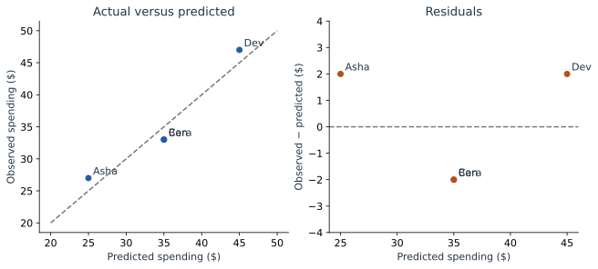
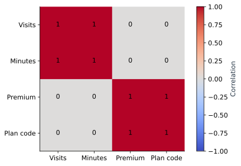
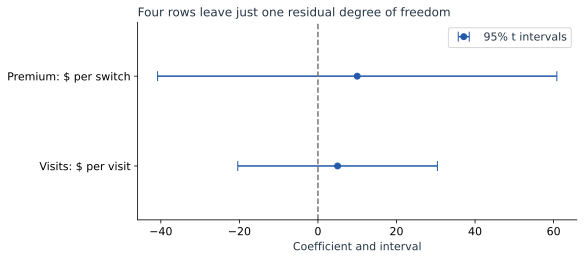
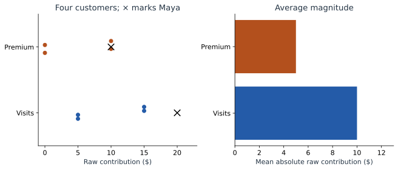
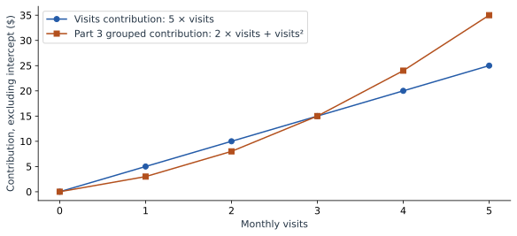

Read a Linear Model Through Its Plots
We now return to the original fitted model: 20 + 5 × visits + 10 × Premium. A plot should answer a specific question about this model. We will construct the numbers first, then choose a visual that makes them easier to read.
First ask: where is the model wrong?
| Customer | Observed | Predicted | Residual |
|---|---|---|---|
| Asha | 27 | 25 | 2 |
| Ben | 33 | 35 | −2 |
| Cara | 33 | 35 | −2 |
| Dev | 47 | 45 | 2 |
An actual-versus-predicted plot puts the prediction on the horizontal axis and observed spending on the vertical axis. Perfect predictions lie on the diagonal. Asha sits at (25, 27), two dollars above that line. The model underpredicts her spending.
A residual plot instead puts the residual on the vertical axis. Perfect predictions sit at zero. Asha’s residual is +2; Ben’s is −2. The two plots show related information, but their vertical axes differ.


On a larger dataset, inspect whether errors curve with the prediction, spread out as predictions increase, or concentrate in particular customer groups. Our four rows demonstrate how to read the axes. The separate evaluation in Part 6 shows how to measure error on fresh rows.
Ask: do inputs repeat one another?
A correlation heatmap compares inputs with inputs. Use the expanded table from Part 6: Visits and Minutes have correlation 1, as do Premium and Plan code. The activity columns have correlation 0 with the plan columns in this balanced toy table.


A squared feature will also tend to be correlated with its original feature over many ranges. That does not automatically make the squared term useless: in Part 3 it creates the curve. Interpret related terms together and evaluate whether the added shape helps.
Ask: what are the fitted rates?
A coefficient or weight plot places a point at each fitted coefficient. Here that is 5 dollars per visit and 10 dollars per Basic-to-Premium switch. Attach each number to its units before comparing it.
The figure below also includes 95% t intervals from the OLS fit. They are wide because we estimated three parameters from four rows. Their calculation is in Part 2.


Ask: what does each term contribute across customers?
Multiply each feature value by its coefficient. This produces one contribution per feature per customer:
| Customer | Visits: 5 × v | Premium: 10 × p | Plus intercept |
|---|---|---|---|
| Asha | 5 | 0 | 20 → total 25 |
| Ben | 5 | 10 | 20 → total 35 |
| Cara | 15 | 0 | 20 → total 35 |
| Dev | 15 | 10 | 20 → total 45 |
A contribution-distribution plot shows the spread of each column. With many customers, a box plot can summarize that spread. With four customers, individual dots are clearer: Visits contributes either 5 or 15, while Premium contributes either 0 or 10.
The companion mean-effect plot takes the absolute value of every contribution before averaging. Visits gives (5 + 5 + 15 + 15) / 4 = 10. Premium gives (0 + 10 + 0 + 10) / 4 = 5.


Use the term mean absolute contribution, not “absolute mean contribution.” For values −5 and +5, the former is 5 while the latter is 0. Averaging signed values first can hide large contributions that cancel.
Understand the reference behind a magnitude
The raw contribution plots measure terms relative to the equation’s zero inputs. Rewrite visits around its mean: $u=v-2$. The same model becomes $30+5u+10p$. Its visits contributions are now −5, −5, +5, +5, with mean absolute value 5, even though every prediction is unchanged.
That is why raw-effect magnitude is tied to the chosen representation. It is useful when the zero point has a clear meaning, but it is not an invariant ranking of importance. The next chapter defines a reference population and measures contributions relative to its mean prediction.
Ask: what is different about Maya?
The crosses on the left panel mark Maya’s contributions: 20 for visits and 10 for Premium. Her visits contribution exceeds all four reference customers’ visits contributions; her plan contribution matches Ben and Dev.
We can explain that without a new algorithm: Maya made four visits, compared with one or three in the reference table. Her predicted 50 is 5 above Dev’s predicted 45. Both have Premium, so the entire difference comes from Maya’s one additional visit.
Ask: how does a contribution change with an input?
A trend-effect plot puts the original input value on the horizontal axis and its contribution on the vertical axis. For our original model, the visits contribution is $5v$, a straight line through zero. For Part 3’s separate curved model, combine its related terms and plot $2v+v^2$.


Choose the plot from the question
| Question | Use this view |
|---|---|
| How wrong are predictions? | Actual versus predicted; residuals |
| Are inputs redundant? | Correlation heatmap |
| What are the fitted rates? | Coefficients with clearly labeled units |
| How do contributions vary? | Effect distribution |
| What is their average magnitude? | Mean absolute effect |
| Where does Maya sit? | Individual effects over the distribution |
| How does an input change its contribution? | Trend effect |
| Why above the reference average? | SHAP, in Part 8 |
The values behind these figures are small enough to check by hand. To regenerate the visuals, run the complete lab. Next, keep Maya’s prediction of 50 but change the starting point of its explanation from the intercept to the reference mean.
Sources and worked examples
This chapter develops ideas from the lessons below in A Data Odyssey’s Explainable AI playlist. The customer data, calculations, figures, and interactive examples here are original teaching examples. The creator’s companion notebooks use different datasets.
- 8 Plots for Explaining Linear Regression — Conor O’Sullivan, A Data Odyssey.